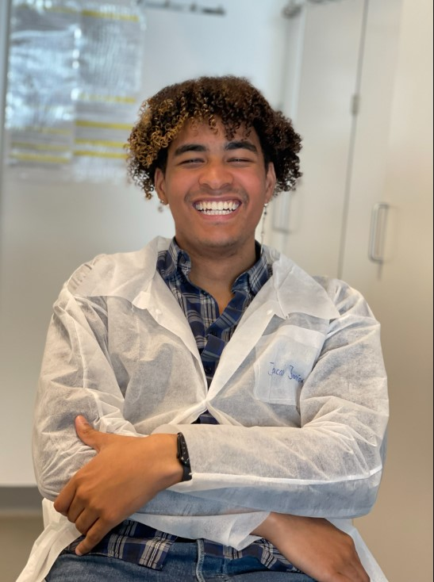

About me
My name is Jacob Jannick Larsen, and I was born on 30 March 2000 to a Danish father and a Ugandan mother.
I grew up in Valby, Copenhagen, where technology became part of my life from a very early age.
I began using computers when I was around two years old,
and that early exposure developed into a lasting interest in technology, computers, and eventually development.

I attended Sukkertoppen Gymnasium, where I completed an HTX education.
After graduating, I entered the workforce and, from 2020 to 2022,
worked as an advisor in the Senior Technical Department at Webhelp Nordic Copenhagen.
The position gave me professional experience with
technical troubleshooting, customer communication, and solving problems in a structured environment.

In 2022, I began studying for a bachelor's degree in Biochemistry at the University of Copenhagen.
After completing my first year, however, I decided to put my studies on hold.
While I found biochemistry interesting, I was uncertain whether it was the field in which I wanted to build my future career.
During my break from university, I began working as a 1st Assistant in a retail store,
where I was responsible for closing the store and handling the responsibilities that came with the role.
At the same time, stepping away from full-time studies gave me more freedom
to pursue personal projects and reconsider the direction I wanted to take professionally.
It was during this period that I reignited my interest in development.
With guidance and help from programmer friends abroad, I began teaching myself more about development and putting that knowledge into practice.
One of the projects that came out of this was my own website featuring a room-building game,
giving me practical experience with turning an idea into an interactive project.
What started as a childhood fascination with computers had gradually developed into something much more serious.
Building my own projects made me realize how much I enjoy the combination of
technology, creativity, problem-solving, and development, and it encouraged me to explore the field further.